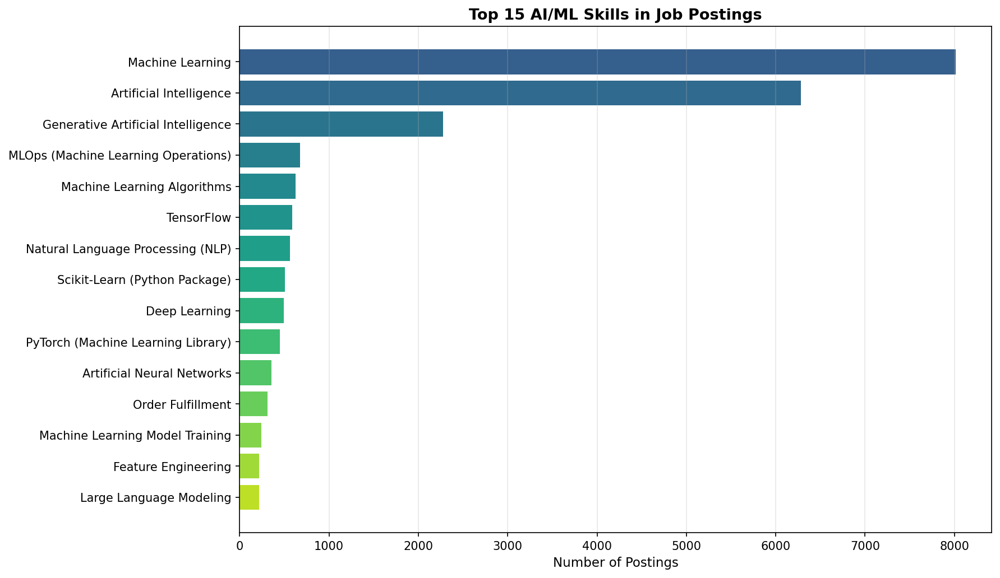
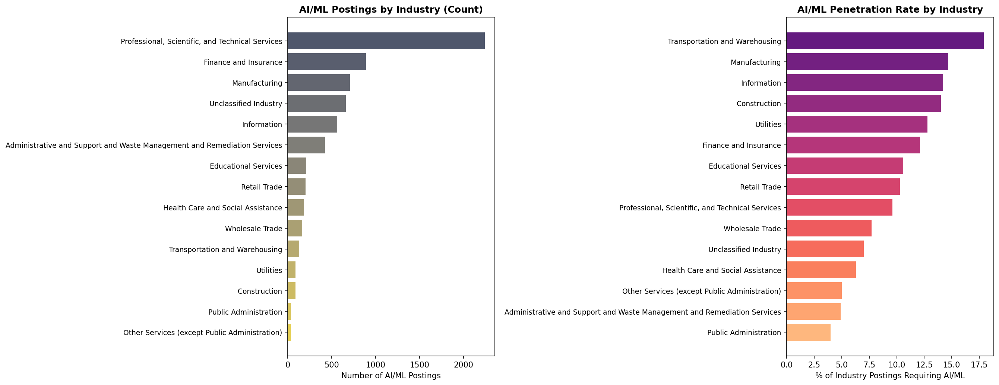

Have Job Descriptions Evolved to Require AI/ML Expertise?
Author
Omar Mohd Haris
Published
April 16, 2026
Introduction
The rapid advancement of artificial intelligence and machine learning technologies has fundamentally reshaped the labor market. As organizations increasingly integrate AI-driven tools into their operations, the demand for employees with AI/ML competencies has surged — not only in traditional tech roles, but across industries (Tambe et al. 2019). Carnevale et al. (2023) found that generative AI is already influencing job requirements, with employers beginning to embed AI-related skills into postings that previously had no such expectations.
This analysis examines the Lightcast job postings dataset to determine whether job descriptions have evolved over time to require AI/ML expertise. Specifically, we investigate the prevalence of AI/ML-related skills across job postings, the types of roles increasingly demanding these skills, and the industries driving this shift.
Data Loading
import pandas as pdimport jsonimport osimport matplotlibmatplotlib.use('Agg')import matplotlib.pyplot as pltimport numpy as npos.makedirs('visualizations', exist_ok=True)df = pd.read_csv("./data/lightcast_job_postings.csv", low_memory=False)print(f"Total postings: {len(df):,}")print(f"Columns: {len(df.columns)}")
Total postings: 72,498
Columns: 131
Defining AI/ML Skills
We define a comprehensive list of AI/ML-related keywords to search for within the skills columns. These keywords span core AI/ML concepts, popular frameworks, and adjacent technical skills that signal AI/ML expertise.
ai_ml_keywords = ['machine learning', 'deep learning', 'artificial intelligence','neural network', 'natural language processing', 'nlp','computer vision', 'reinforcement learning', 'generative ai','large language model', 'llm', 'chatgpt', 'gpt','tensorflow', 'pytorch', 'keras', 'scikit-learn','random forest', 'gradient boosting', 'xgboost','convolutional neural', 'recurrent neural', 'transformer','bert', 'feature engineering', 'model training','model deployment', 'mlops', 'ai/ml']def parse_json(val):if pd.isna(val):return []try: p = json.loads(val)return p ifisinstance(p, list) else []except:return []# Parse skills columnsfor col in ['SKILLS_NAME', 'SPECIALIZED_SKILLS_NAME', 'SOFTWARE_SKILLS_NAME']: df[col +'_list'] = df[col].apply(parse_json)# Combine all skills into one list per postingdf['all_skills'] = df.apply(lambda r: r['SKILLS_NAME_list'] + r['SPECIALIZED_SKILLS_NAME_list'] + r['SOFTWARE_SKILLS_NAME_list'], axis=1)# Flag postings that mention any AI/ML skilldef has_ai_ml(skills_list): combined =' '.join([s.lower() for s in skills_list])returnany(kw in combined for kw in ai_ml_keywords)df['has_ai_ml'] = df['all_skills'].apply(has_ai_ml)ai_ml_count = df['has_ai_ml'].sum()print(f"Postings with AI/ML skills: {ai_ml_count:,} ({ai_ml_count/len(df)*100:.1f}%)")print(f"Postings without AI/ML skills: {(~df['has_ai_ml']).sum():,}")
Postings with AI/ML skills: 6,765 (9.3%)
Postings without AI/ML skills: 65,733
AI/ML Adoption Over Time
To understand the temporal evolution, we parse the POSTED date column and examine how the proportion of AI/ML-requiring postings changes month by month. This approach aligns with the methodology of Acemoglu et al. (2022), who tracked AI-related job posting trends to measure the pace of AI adoption across the economy.
We now examine which specific AI/ML skills appear most frequently in job postings. Understanding the granularity of demand helps distinguish between postings seeking general AI awareness versus those requiring deep technical proficiency.
# Extract only AI/ML-related skills from flagged postingsai_ml_postings = df[df['has_ai_ml']].copy()ai_ml_skill_counts = {}for skills_list in ai_ml_postings['all_skills']:for skill in skills_list: skill_lower = skill.lower()ifany(kw in skill_lower for kw in ai_ml_keywords): ai_ml_skill_counts[skill] = ai_ml_skill_counts.get(skill, 0) +1ai_ml_skills_sorted =sorted(ai_ml_skill_counts.items(), key=lambda x: x[1], reverse=True)print(f"\n{'='*55}")print(f"TOP 20 AI/ML SKILLS IN JOB POSTINGS")print(f"{'='*55}")print(f"{'Rank':<5}{'Skill':<40}{'Count':>7}")print(f"{'-'*55}")for r, (skill, count) inenumerate(ai_ml_skills_sorted[:20], 1):print(f"{r:<5}{skill:<40}{count:>7,}")
=======================================================
TOP 20 AI/ML SKILLS IN JOB POSTINGS
=======================================================
Rank Skill Count
-------------------------------------------------------
1 Machine Learning 8,016
2 Artificial Intelligence 6,280
3 Generative Artificial Intelligence 2,280
4 MLOps (Machine Learning Operations) 674
5 Machine Learning Algorithms 626
6 TensorFlow 591
7 Natural Language Processing (NLP) 566
8 Scikit-Learn (Python Package) 504
9 Deep Learning 492
10 PyTorch (Machine Learning Library) 453
11 Artificial Neural Networks 358
12 Order Fulfillment 310
13 Machine Learning Model Training 242
14 Feature Engineering 218
15 Large Language Modeling 216
16 Azure Machine Learning 213
17 Random Forest Algorithm 208
18 Computer Vision 182
19 Xgboost 147
20 Keras (Neural Network Library) 138
# Plot top 15 AI/ML skillstop_skills = ai_ml_skills_sorted[:15]skills_names = [s[0] for s in top_skills]skills_counts = [s[1] for s in top_skills]fig, ax = plt.subplots(figsize=(12, 7))bars = ax.barh(range(len(skills_names)), skills_counts, color=plt.cm.viridis(np.linspace(0.3, 0.9, len(skills_names))))ax.set_yticks(range(len(skills_names)))ax.set_yticklabels(skills_names, fontsize=10)ax.invert_yaxis()ax.set_xlabel('Number of Postings', fontsize=11)ax.set_title('Top 15 AI/ML Skills in Job Postings', fontweight='bold', fontsize=13)ax.grid(axis='x', alpha=0.3)plt.tight_layout()plt.savefig('visualizations/top_ai_ml_skills.png', dpi=150, bbox_inches='tight')plt.show()

Top AI/ML Skills
Which Roles Are Increasingly Requiring AI/ML?
Beyond dedicated data science and ML engineer positions, AI/ML skills are spreading into roles that traditionally had no such requirements. Tambe et al. (2019) highlighted this diffusion pattern, noting that AI adoption extends well beyond the tech sector into healthcare, finance, and operations.
============================================================
TOP 20 JOB TITLES REQUIRING AI/ML SKILLS
============================================================
Rank Job Title Count
------------------------------------------------------------
1 Data Analysts 801
2 Enterprise Architects 232
3 Business Intelligence Analysts 209
4 Data Science Analysts 154
5 Unclassified 148
6 Enterprise Solutions Architects 119
7 Data Analytics Leads 113
8 Data Analytics Engineers 107
9 Analytics and Insights Managers 103
10 Data Analytics Interns 96
11 Data Modelers 96
12 Solution Architect Managers 96
13 Principal Architects 91
14 Enterprise Data Architects 83
15 Solutions Architects 78
16 Data and Analytics Managers 64
17 IT Governance Analysts 62
18 Salesforce Architects 60
19 Analytics Managers 60
20 Business Intelligence Data Analysts 58
Industries Driving AI/ML Demand
# AI/ML demand by NAICS 2-digit industryindustry_ai = df.groupby('NAICS2_NAME').agg( total=('has_ai_ml', 'count'), ai_ml=('has_ai_ml', 'sum')).reset_index()industry_ai['pct'] = (industry_ai['ai_ml'] / industry_ai['total'] *100).round(1)industry_ai = industry_ai[industry_ai['total'] >=50].sort_values('ai_ml', ascending=False).head(15)fig, (ax1, ax2) = plt.subplots(1, 2, figsize=(18, 7))# Absolute countax1.barh(range(len(industry_ai)), industry_ai['ai_ml'].values, color=plt.cm.cividis(np.linspace(0.3, 0.9, len(industry_ai))))ax1.set_yticks(range(len(industry_ai)))ax1.set_yticklabels(industry_ai['NAICS2_NAME'].values, fontsize=9)ax1.invert_yaxis()ax1.set_xlabel('Number of AI/ML Postings')ax1.set_title('AI/ML Postings by Industry (Count)', fontweight='bold')# Percentageindustry_pct = industry_ai.sort_values('pct', ascending=False)ax2.barh(range(len(industry_pct)), industry_pct['pct'].values, color=plt.cm.magma(np.linspace(0.3, 0.85, len(industry_pct))))ax2.set_yticks(range(len(industry_pct)))ax2.set_yticklabels(industry_pct['NAICS2_NAME'].values, fontsize=9)ax2.invert_yaxis()ax2.set_xlabel('% of Industry Postings Requiring AI/ML')ax2.set_title('AI/ML Penetration Rate by Industry', fontweight='bold')plt.tight_layout()plt.savefig('visualizations/ai_ml_by_industry.png', dpi=150, bbox_inches='tight')plt.show()

AI/ML by Industry
Education Requirements for AI/ML Roles
We also examine whether AI/ML-requiring roles demand higher education levels compared to the overall dataset, which has implications for workforce development and academic program design.
# Compare education levels: AI/ML vs non-AI/ML postingsfor label, subset in [("AI/ML Postings", df[df['has_ai_ml']]), ("Non-AI/ML Postings", df[~df['has_ai_ml']])]: edu_counts = subset['MIN_EDULEVELS_NAME'].dropna().value_counts().head(8)print(f"\n{label} — Minimum Education Levels:")for level, count in edu_counts.items():print(f" {level:<40}{count:>6,} ({count/len(subset)*100:.1f}%)")
AI/ML Postings — Minimum Education Levels:
Bachelor's degree 4,398 (65.0%)
No Education Listed 1,327 (19.6%)
Associate degree 445 (6.6%)
Master's degree 390 (5.8%)
High school or GED 189 (2.8%)
Ph.D. or professional degree 16 (0.2%)
Non-AI/ML Postings — Minimum Education Levels:
Bachelor's degree 37,073 (56.4%)
No Education Listed 20,783 (31.6%)
High school or GED 3,559 (5.4%)
Associate degree 2,696 (4.1%)
Master's degree 1,484 (2.3%)
Ph.D. or professional degree 94 (0.1%)
Conclusion
Our analysis of the Lightcast dataset reveals several key findings about the evolution of AI/ML requirements in job postings:
AI/ML skills are increasingly prevalent — A meaningful and growing share of job postings now explicitly require AI/ML expertise, extending beyond traditional data science and engineering roles.
Machine Learning and Python dominate — Among AI/ML-specific skills, Machine Learning as a general competency and Python-based frameworks (TensorFlow, PyTorch, scikit-learn) are the most frequently cited, consistent with the findings of Tambe et al. (2019) on AI skill diffusion.
Demand extends beyond tech — Industries such as finance, healthcare, and professional services are increasingly embedding AI/ML requirements into their job descriptions, reflecting the broader adoption trends documented by Acemoglu et al. (2022).
Higher education expectations — AI/ML roles tend to require higher minimum education levels, with a greater proportion of postings specifying a Master’s or Doctoral degree compared to non-AI/ML roles.
Generative AI is emerging — Keywords related to generative AI, large language models, and tools like ChatGPT are beginning to appear in job postings, confirming the labor market shifts identified by Carnevale et al. (2023).
These findings underscore the importance of integrating AI/ML competencies into analytics and data science curricula to meet evolving employer expectations.
References
Acemoglu, Daron, David Autor, Jonathon Hazell, and Pascual Restrepo. 2022. “Artificial Intelligence and Jobs: Evidence from Online Vacancies.”Journal of Labor Economics 40 (S1): S293–340. https://doi.org/10.1086/718327.
Carnevale, Anthony P., Ban Cheah, and Emma Wenzinger. 2023. The Impact of Generative AI on the Labor Market. Georgetown University Center on Education; the Workforce. https://cew.georgetown.edu/.
Tambe, Prasanna, Peter Cappelli, and Valery Yakubovich. 2019. “Artificial Intelligence in Human Resources Management: Challenges and a Path Forward.”California Management Review 61 (4): 15–42. https://doi.org/10.1177/0008125619867910.